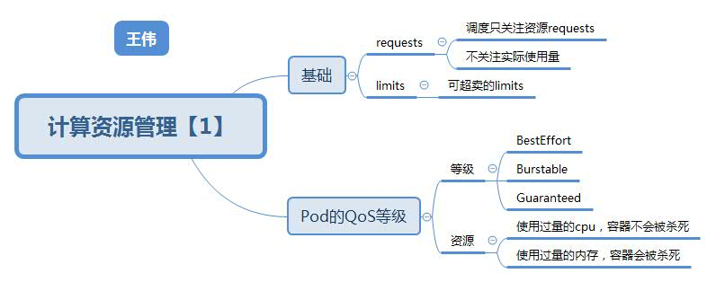

关键词 #
资源模型, 资源管理

资源模型 #
requests limits #
CPU资源被称作 “可压缩资源”: Pod 只会“饥饿”，但不会退出. 内存资源被称作“不可压缩资源”: Pod 会因为 OOM（Out-Of-Memory）被内核杀掉。
Kubernetes 这种对 CPU 和内存资源限额的设计，实际上参考了 Borg 论文中对**“动态资源边 界”**的定义，既：容器化作业在提交时所设置的资源边界，并不一定是调度系统所必须严格遵守 的，这是因为在实际场景中，大多数作业使用到的资源其实远小于它所请求的资源限额。
而 Kubernetes 的 requests+limits 的做法，其实就是上述思路的一个简化版：用户在提交 Pod 时，可以声明一个相对较小的 requests 值供调度器使用，而 Kubernetes 真正设置给容器 Cgroups 的，则是相对较大的 limits 值。不难看到，这跟 Borg 的思路相通的。
limits: 而在真正设置 Cgroups 限制的时候，kubelet 则会按照 limits 的值来进行设置 requests: 在调度的时候，kube-scheduler 只会按照 requests 的值进行计算
QoS #
Guaranteed: requests == limits Burstable: 至少有一个 Container 设置了 requests BestEffort: 没有设置 requests，也没有设置 limits
cpuset: 把容器绑定到某个 CPU 的核上，而不是像 cpushare 那样共享 CPU 的计算能力.
- cpuset配置:
- Guaranteed
- CPU 资源的 requests == limits
CPU CGroup配置 #
| CGroup类型 | 参数 | QoS | 值 |
|---|---|---|---|
| 容器的CGroup | cpu.shares | BestEffort Burstable Guaranteed |
2 requests.cpu * 1024 requests.cpu * 1024 |
| 容器的CGroup | cpu.cfs_quota_us | BestEffort Burstable Guaranteed |
-1 limits.cpu * 100 limits.cpu * 100 |
| Pod的CGroup | cpu.shares | BestEffort Burstable Guaranteed |
2 Pod所有容器(requests.cpu * 1024)之和; Pod所有容器(requests.cpu * 1024)之和; |
| Pod的CGroup | cpu.cfs_quota_us | BestEffort Burstable Guaranteed |
-1 Pod所有容器(limits.cpu * 100)之和; Pod所有容器(limits.cpu * 100)之和; |
在cgroup中的设置
requests.cpu #
requests.cpu=250m cpu.shares = (250/1000)/1024 cpu.shares 默认 则是 1024
limits.cpu #
limits.cpu=500m cpu.cfs_quota_us = (500/1000)* 100ms cpu.cfs_period_us 的值始终是 100ms
CGroup v2 #
驱逐策略 && OOM Killer #
驱逐 #
| kubelet参数 | 分类 | 驱逐方式 |
|---|---|---|
| evictionSoft | 软驱逐 | 有宽限期， pod优雅终止， 不会影响应用。 |
| evictionHard | 硬驱逐 | 没有宽限期， 可能影响应用。 |
基于内存压力的驱逐 #
MemoryPressure = true
驱逐规则
基于磁盘压力的驱逐 #
DiskPressure = true
驱逐规则
Eviction 在 Kubernetes 里其实分为 Soft 和 Hard 两种模式。 Soft Eviction模式： 允许你为 Eviction 过程设置一段“优雅时间”； Hard Eviction模式： Eviction 过程就会在阈值达到之后立刻开始；
Eviction时机： BestEffort > Burstable > Guaranteed
内存OOM Killer行为 #
按进程的oom_score来进行优先级排序，选择待终止的进程，oom_score越高， 越容器被终止。
oom_score = (内存占总内存的比例值) * 10 + oom_score_adj
| Pod QoS类型 | oom_score_adj |
|---|---|
| Guaranteed | -998 (不会被kill) |
| BestEffort | 1000 (优先被kill) |
| Burstable | min(max(2,1000 - (1000 * memoryRequestsBytes)/machineMemoryCapacityBytes), 999) |
参考 #
- 《Kubenetes in Action》 七牛容器云团队
- 深入剖析Kubernetes - 40 Kubernetes的资源模型与资源管理 张磊
- «模块九-生产化集群的管理» 孟凡杰